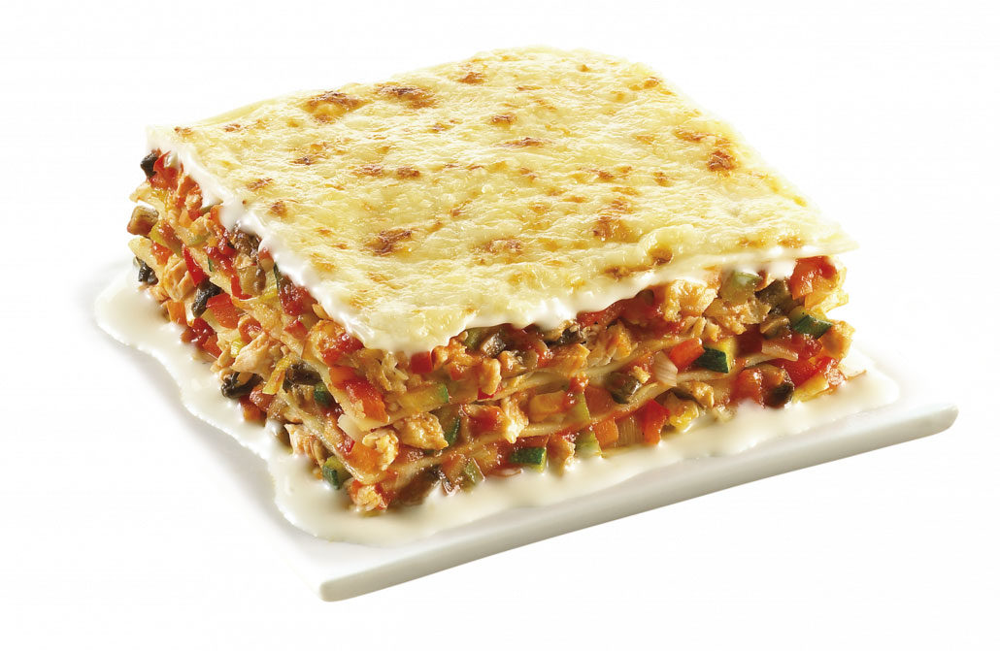

Receta Lasaña

Descripcion:
Lasaña estilo tradicional y llena de sabor.
Una receta facil que le va a encatar a toda la familia
Ingredientes:
- 1 frasco de salsa italiana tradicional
- 6 laminas de lasaña crudas
- 1 recipiente de queso ricotta
- 2 tazas de queso rayado mozarella
- 1/4 taza de queso parmesano rayado
Pasos a seguir:
- Extienda aproximadamente 1 taza de salsa italiana en una fuente para
hornear poco profunda de 2.
Cubra con 3 laminas de lasaña, queso ricotta, 1 taza de queso mozzarella,
queso parmesano y 1 taza de salsa italiana. Cubra con las 3
laminas de lasaña y la salsa italiana restante.
-
Hornee a 190 grados durante 1 hora Destape y cubra con el queso mozzarella restante.
Deje reposar 5 minutos.